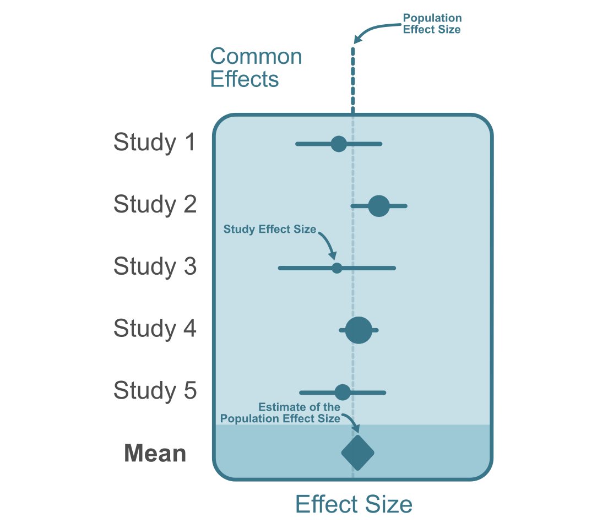

Meta-analysis is an analytic tool to synthesize quantitative evidence from multiple studies. By systematically combining and analyzing the results of multiple studies, meta-analysis provides a comprehensive overview, unveiling patterns, trends, and insights that individual studies might not be able to capture. Combining research findings also has the added benefit of increasing the precision of our results (i.e., greater statistical power). In this section we will cover the method described by (Hunter and Schmidt 2015) since it is readily compatible with artifact corrections (see next chapter). For the random-effects model however, we use an integrated approach that incorporates methods from Hunter and Schmidt (2015) and Hedges and Vevea (1998) that was first introduced by Morris et al. (2014). However it is important to note that there are other common methods to conduct meta-analyses that have their strengths and weaknesses (hedges2014?; Callender and Osburn 1980; Johnson, Mullen, and Salas 1995).
12.2 Common Effect Model
A common effect model is the simplest form of meta-analysis. It assumes that all the variation in observed effect sizes is attributable to sampling error (see Figure 12.1). In other words, all the observed effect sizes are estimates of the same population effect size. Note that there is a distinction between fixed effects models and a common effect model (Viechtbauer, n.d.; Laird and Mosteller 1990). The common effect model assumes that the true effect size is identical for each study while the fixed effects model does not assume this. Instead, the fixed effects model can be interpreted as the weighted average of true effects. Computationally, they are the same and provide the same parameter estimates, yet the interpretation differs (Viechtbauer, n.d.).

Figure 12.1: The diagram above depicts a common effect meta-analysis of five studies. The study effect sizes are homogenous and all estimate a single true population effect size.
Take a correlation coefficient between \(X\) and \(Y\) as an example. The common effect model can be modeled such that population correlation \(\rho\) is held constant each study correlation estimate \((r_{XY\jmath})\), such that,
Where \(\varepsilon_\jmath\) indicates sampling error1 and the subscript \(\jmath\) denotes each study. Similar to the true score theory model that we discussed in chapter 4, the variance components of each term can similarly be written out as,
Therefore the only source of variation in the observed effect sizes is sampling error. Ultimately, our goal in a common effects model is to obtain a precise estimate of the population correlation. To obtain an estimate of the population correlation, \(\rho_{XY}\), we can calculate the average observed effect size, \(\bar{r}_{XY}\) from \(k\) studies. However, in practice, effect sizes from different studies have varying levels of precision (i.e., different sampling variances). A simple arithmetic average will not account for the differences between studies in their precision. Instead, we can calculate a weighted average where the weights each study can be calculated by the inverse variance of each study such that,
The sampling variances are different for each study hence the subscript \(\jmath\). Then we can calculate a weighted average to get an estimate \(\hat{\rho}_{XY}\) of the population correlation \(\rho_{XY}\),
Where \(\sum^k_{i=1}\) is the sum across all \(k\) studies. This weighted average will be an unbiased estimate of the population effect size. However, even though this mean effect size is more precise compared to single-study estimates, it is not exempt from error itself. We we can compute the sampling variance for \(\hat{\rho}_{XY}\) as,
All of this can be done analogously with standardized mean differences as we will see in the example below:
Applied Example in R
Lets use a meta-analytic data set investigating the the effectiveness of a writing-to-learn intervention on academic achievement from Bangert-Drowns, Hurley, and Wilkinson (2004). This data set has standardized mean differences between the treatment group and a control group from \(k=48\) studies (total sample size: \(n=5,576\)) and is available within the developmental version of the metadat package (White et al. 2022). Lets conduct a common effect meta-analysis using the equations from the previous section. We can use the rma function in the metafor package (Viechtbauer 2010) to conduct a common effect (method = 'EE') meta-analysis without having to write each equation by hand.
library(metadat)library(metafor)library(tidyverse)# display first 6 studiesdf <- dat.bangertdrowns2004 |> dplyr::select('author','year','ni','yi','vi')head(df)
delta_hat var CI_ll CI_ul
1 0.1656264 0.0007252983 0.1128419 0.2184109
The results show an estimated population SMD of \(\hat{\delta}_{GY}=0.17\, [0.11,\, 0.22]\).
12.3 Random Effects Model
The random-effects model refers to a model that allows for the population effect size to vary from study to study (see Figure 12.2). Random-effects differs from the fixed effects model in an important way: it does not assume that all observed effect sizes come from a single (fixed) population effect size (Borenstein et al. 2010). This variation in population effect sizes is called heterogeneity. In the traditional Hunter and Schmidt (2015) the weights utilized in the random effects meta-analysis are identical to the common effect model. In other conventional meta-analysis methods (Hedges and Vevea 1998), random-effect weights usually include a random effect component containing the variation in population effect sizes (this has the effect of making study weights more similar to each other with more variation in population effects). A modern approach introduced by Morris et al. (2014) and later tested by Brannick et al. (2019), added this random effect component to the Hunter-Schmidt method. The simulation study by Brannick et al. (2019), concluded that weights incorporating random effect components improved the Hunter-Schmidt estimates. Here we will discuss Hedges-Vevea’s method with some elements taken from Hunter-Schmidt.
Figure 12.2: The diagram above depicts a random-effects meta-analysis of five studies. Effect sizes are more variable than the common effect meta-analysis since effect sizes vary due to sampling error and population effect sizes.
The model from Equation 12.1 can be changed slightly to encompass variation of the population effect size from study to study:
In the common effect model, we assumed that all the variation in study correlations is accounted for by variation in sampling error (see Equation 12.2). However in the random-effects model the variance in population correlations (\(\sigma^2_\rho\)) is allowed to be greater than zero. The variance components can be written out as,
Estimating variance components can be done computationally through an iterative estimation procedure called REstricted Maximum Likelihood (REML) estimation. The meta-analyses we call in the R code will do this for us automatically. The estimated variance of population effect sizes, \(\widehat{\mathrm{var}}(\rho_{XY})\), can now be incorporated into the inverse variance weights alongside
The sampling variances are different for each study hence the subscript \(\jmath\). Now we can estimate the mean of population effects by taking the weighted average effect size (equation 16.5, Cooper, Hedges, and Valentine 2009),
Where \(\jmath=1...k\) studies. The standard error of the mean of population effects can calculated from the summation of inverse weights (equation 16.6, Cooper, Hedges, and Valentine 2009),
In other conventions, the variance in population effects (\(\mathrm{var}(\rho_{XY})\)) is denoted as \(\tau^2\)(Borenstein et al. 2010; DerSimonian and Kacker 2007; Hedges and Vevea 1998), but conceptually \(\mathrm{var}(\rho_{XY})\) and \(\tau^2\) these are identical. Taking the square root of \(\mathrm{var}(\rho_{XY})\) is the standard deviation of population effect sizes which can be a useful measure of heterogeneity. Furthermore, we can use \(\mathrm{var}(\rho_{XY})\) to calculate credibility (prediction) intervals which allows us to draw inferences about the range of plausible population effect sizes. For example, the 90% credibility interval can be calculated with the following equations:
The confidence interval and credibility interval have fundamentally different interpretations that are often misinterpreted in published work (Whitener 1990). When we are interpreting a single realized interval (i.e., our estimate-in-hand), the 90% credibility interval can be interpreted as the region in which 90% of population effect sizes exist, however, a 95% confidence interval describes the interval in which there is a 95% probability of containing the true mean of population effect sizes. It is important to note that the confidence interval interpretation here is only valid in the case of a single realized interval (Vos and Holbert 2022), if there is more than one interval obtained from the same population of studies, then the interpretation does not hold (this would be a rare in a meta-analysis).
Applied Example in R
Let’s continue looking at the meta-analysis from Bangert-Drowns, Hurley, and Wilkinson (2004). This data set has standardized mean differences between the treatment group and a control group from \(k=48\) studies (total sample size: \(n=5,576\)) and is available within the developmental version of the metadat package (White et al. 2022). Lets conduct a common effect meta-analysis using the equations from the previous section. We can use the rma function in the metafor package (Viechtbauer 2010) to conduct a random effect meta-analysis with REML estimation we can use the method = 'REML' argument.
library(metadat)library(metafor)library(tidyverse)# display first 6 studiesdf <- dat.bangertdrowns2004 |> dplyr::select('author','year','ni','yi','vi')head(df)
delta_hat var CI_ll CI_ul
1 0.2219296 0.002119178 0.1317036 0.3121556
The results show an estimated population effect of \(\hat{\bar{\rho}}=0.22\, [0.13,\, 0.31]\).
12.4 Artifact Corrections
Artifact correction meta-analysis, also referred to as psychometric meta-analysis, is a form of meta-analysis where effect sizes are systematically corrected for sources of bias. These sources of bias have been discussed in previous chapters 4-10. Methodology for conducting artifact correction style meta-analyses were originally pioneered by Frank Schmidt and John Hunter (2015; 1977) and then reviewed more recently by Brenton Wiernik and Jeffrey Dahlke (2020). There has also been powerful R packages developed to aide in the application of artifact correction meta-analyses that we have used in previous chapters (dahlke2019?). You will notice that in this section, we do not discuss standardized mean differences. This is due to the fact that the artifact correction model is designed for pearson correlations, in order to use this method for standardized mean differences, convert to pearson correlations using the methods described in chapter 11, and then use the correction methods used below. Once you apply the corrections to the converted correlations they can then be converted back to a standardized mean difference.
12.5 Bare Bones vs Artifact Correction Meta-Analysis
Bare bones meta-analyses are what we just went over, that is, meta-analyses that do not correct for biases in effect size estimates. This section will be dedicated to the artifact correction approach to meta-analysis that aims to correct for statistical artifacts. The choice between these two types of meta-analyses depends on the research question, the available data, and the assumptions researchers are willing to make. If the goal is to investigate effect sizes as they are reported, then a bare-bones meta-analysis might be the way to go. On the other hand, if the goal is to obtain a more accurate estimate of the target effect size by accounting for biases induced by statistical artifacts, an artifact correction meta-analysis is preferrable.
Bare-Bones Meta-Analysis: In a bare-bones meta-analysis, the focus is on aggregating effect sizes from various studies without explicitly correcting for potential biases in these effect size estimates.
Artifact Correction Meta-Analysis: In contrast, an artifact correction meta-analysis takes into account and attempts to correct for biases that may be present in the effect size estimates from individual studies. This involves addressing potential sources of bias, such as measurement error or selection effects, through statistical techniques or adjustments. By doing so, the meta-analysis aims to provide a more accurate and unbiased estimate of the true effect size. Although it is important to note that this method will require additional assumptions about the nature of the data.
Note that the bare-bones model does not assume that there is no bias, rather, the bare-bones model is estimating something else entirely, that is, the population effect size.
12.6 Individual Artifact Correction Model
The individual artifact correction model corrects each effect size individually prior to conducting the meta-analysis. In practice, observed (study) effect sizes (\(r_{\widetilde{X}\widetilde{Y}|\mathcal{E}\jmath}\)) can be severely biased relative to our target population correlation (\(\rho_{XY\jmath}\)) due to measurement and selection artifacts as described in previous chapters. The nature of the beast is that there will be some that we can account for and some we can not. If we decide that corrections to observed effect sizes are necessary to answer our research question, then we can construct an artifact correction model. In the artifact correction model, we can incorporate an artifact attenuation/inflation factor, \(\alpha_\jmath\), to the bare-bones formula such that,
The attenuation/inflation factor, \(\alpha_i\), must be estimated for each study, \(i\). Using estimates of \(\alpha\) (estimate denoted with the English letter \(a\)), Equation 12.4 can be re-arranged to obtain unbiased estimates of the target population effect size:
This division of \(\hat{a}_i\) will provide us with our corrected effect size estimates that we can denote with the subscript,
\[
r_{XY\jmath} = \frac{r_{\widetilde{X}\widetilde{Y}|\mathcal{E}\jmath}}{a_\jmath}
\] Using a random effects meta-analysis described in Section 12.3, we can average the \(r_{XY\jmath}\) to get an estimate of the mean of true population correlations \(\hat{\bar{\rho}}_{XY}\).
If we were to conduct a bare-bones and an artifact correction meta-analysis and compute the variance in population correlations, we could see how the corrections reduce the heterogeneity in the effect size estimates by comparing variance in true effect sizes between both models. The percent reduction in heterogeneity can be computed by taking the ratio of the two. Hunter and Schmidt (2015) suggest that if 75% of the heterogeneity is accounted for by artifact corrections, then we can assume that the remaining heterogeneity is attributable to remaining artifacts that have not been addressed in the current meta-analysis. Although it is important to point out that this is simply a rule of thumb rather than a mathematical property (arguably not even a useful rule of thumb).
Applied Example in R
Lets conduct an individual correction meta-analysis in r using the data set by Roth (2015). This data set consists of correlations between school grades and intelligence test scores. It also contains information on the reliability of the intelligence test scores and the extent of range restriction in test scores. We can conduct a meta-analysis correcting for univariate indirect range restriction and measurement error in test scores. The artifact attenuation/inflation factor for the correlation would be:
Lets conduct the meta-analysis using the the psychmeta package (Dahlke and Wiernik 2019). The function ma_r_ic is designed to conduct an individual correction meta-analysis on correlation coefficients.
k n mean_rho SE SD_rho
1 240 105151 0.4899442 0.01482776 0.2261415
We can also obtain credibility intervals by using the credibility function in the psychmeta package. The interval defaults to 80% intervals, however we can change that to 90% by inputting .90 into the cred_level argument.
Lets compare these results to the bare-bones model. In psychmeta the bare-bones model can be conduced using ma_r_bb. However, the ma_r_ic function also reports the bare-bones results as well. Therefore we can just extract the necessary statistics from the model.
k n mean_rho_obs SE SD_rho_obs
1 240 105151 0.4418789 0.01191933 0.1846534
We can see that the estimate of the population correlation is largely attenuated in the observed values. This is due to the fact tests of intelligence are not perfectly reliable and the scores were restricted in their range.
Bangert-Drowns, Robert L, Marlene M Hurley, and Barbara Wilkinson. 2004. “The Effects of School-Based Writing-to-Learn Interventions on Academic Achievement: A Meta-Analysis.”Review of Educational Research 74 (1): 29–58. https://doi.org/10.3102/00346543074001029.
Borenstein, Michael, Larry V. Hedges, Julian P. T. Higgins, and Hannah R. Rothstein. 2010. “A Basic Introduction to Fixed-Effect and Random-Effects Models for Meta-Analysis.”Research Synthesis Methods 1 (2): 97–111. https://doi.org/10.1002/jrsm.12.
Brannick, Michael T., Sean M. Potter, Bryan Benitez, and Scott B. Morris. 2019. “Bias and Precision of Alternate Estimators in Meta-Analysis: Benefits of Blending Schmidt-Hunter and Hedges Approaches.”Organizational Research Methods 22 (2): 490–514. https://doi.org/10.1177/1094428117741966.
Callender, John C., and H. G. Osburn. 1980. “Development and Test of a New Model for Validity Generalization.”Journal of Applied Psychology 65 (5): 543–58. https://doi.org/10.1037/0021-9010.65.5.543.
Cooper, Harris M., Larry V. Hedges, and Jeff C. Valentine, eds. 2009. The Handbook of Research Synthesis and Meta-Analysis. 2nd ed. New York: Russell Sage Foundation.
Dahlke, Jeffrey A., and Brenton M. Wiernik. 2019. “Psychmeta: An R Package for Psychometric Meta-Analysis.”Applied Psychological Measurement 43 (5): 415–16. https://doi.org/10.1177/0146621618795933.
Hedges, Larry V., and Jack L. Vevea. 1998. “Fixed- and Random-Effects Models in Meta-Analysis.”Psychological Methods 3 (4): 486–504. https://doi.org/10.1037/1082-989X.3.4.486.
Hunter, John E., and Frank L. Schmidt. 2015. Methods of meta-analysis: correcting error and bias in research findings (third). Third. Thousand Oaks, California: Sage Publications.
Johnson, Blair T., Brian Mullen, and Eduardo Salas. 1995. “Comparison of Three Major Meta-Analytic Approaches.”Journal of Applied Psychology 80 (1): 94–106. https://doi.org/10.1037/0021-9010.80.1.94.
Laird, Nan M., and Frederick Mosteller. 1990. “Some Statistical Methods for Combining Experimental Results.”International Journal of Technology Assessment in Health Care 6 (1): 5–30. https://doi.org/10.1017/S0266462300008916.
Morris, Scott, Rebecca Daisley, Megan Wheeler, and Peggy Boyer. 2014. “A Meta-Analysis of the Relationship Between Individual Assessments and Job Performance.”The Journal of Applied Psychology 100 (May). https://doi.org/10.1037/a0036938.
Roth, Bettina. 2015. “Intelligence and School Grades: A Meta-Analysis.”
Schmidt, Frank, and John Hunter. 1977. “Development of a General Solution to the Problem of Validity Generalization.”Journal of Applied Psychology 62 (October): 529–40. https://doi.org/10.1037/0021-9010.62.5.529.
Viechtbauer, Wolfgang. 2010. “Conducting meta-analyses in R with the metafor package.”Journal of Statistical Software 36 (3): 1–48. https://doi.org/10.18637/jss.v036.i03.
White, Thomas, Daniel Noble, Alistair Senior, W. Kyle Hamilton, and Wolfgang Viechtbauer. 2022. Metadat: Meta-Analysis Datasets. https://CRAN.R-project.org/package=metadat.
Whitener, Ellen M. 1990. “Confusion of Confidence Intervals and Credibility Intervals in Meta-Analysis.”Journal of Applied Psychology 75 (3): 315–21. https://doi.org/10.1037/0021-9010.75.3.315.
Wiernik, Brenton M., and Jeffrey A. Dahlke. 2020. “Obtaining Unbiased Results in Meta-Analysis: The Importance of Correcting for Statistical Artifacts.”Advances in Methods and Practices in Psychological Science 3 (1): 94–123. https://doi.org/10.1177/2515245919885611.
1: the r subscript that usually follows \(\varepsilon_r\) is removed for the sake of simplicity.↩︎